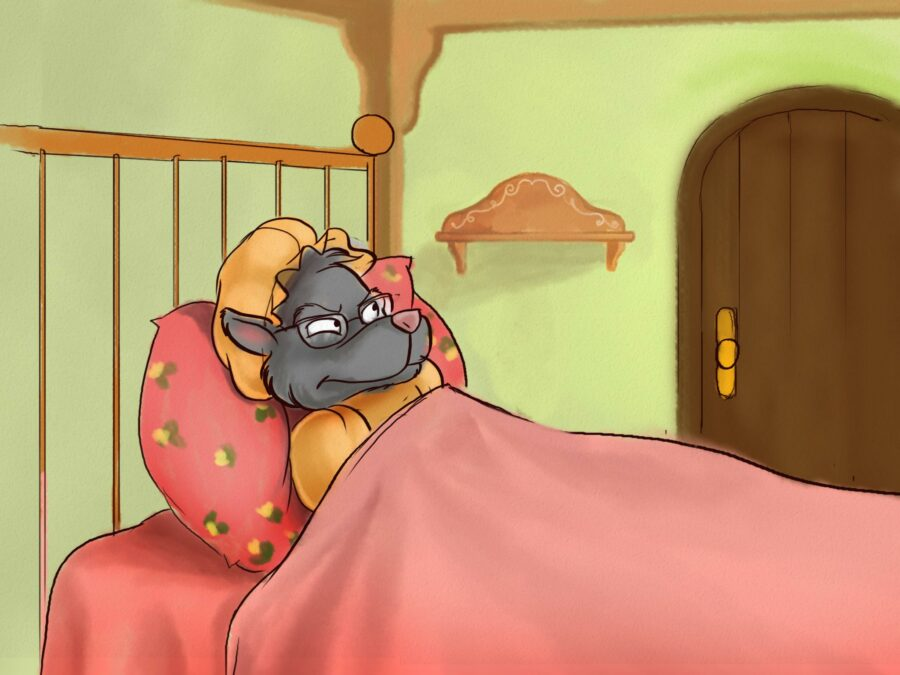

Once upon a time there was sweet little girl. Everyone called her Little Red Riding Hood, because she always wore a red riding hood. It had been given to her by her grandmother, who loved the little girl very much.
One day Little Red Riding Hood’s mother said, “Here, child, take this basket to your grandmother. It’s got bread, butter, cake and berries in it. She’s feeling sick and I hope this will make her feel better. Don’t talk to strangers, don’t leave the path and walk straight to your grandma’s house. “
Little Red Riding Hood’s grandmother lived half an hour away in the woods outside the village. So Little Red Riding Hood set off. The girl had just entered the woods, when a wolf came out of the trees. She wasn’t scared because she didn’t know wolves are dangerous.
“Good day, Little Red Riding Hood”, the wolf greeted her. “Good day, Mr Wolf”, the girl replied. “Where are you going?” he asked. “I’m going to visit my grandmother, because she isn’t feeling very well”, Little Red Riding Hood replied. “What do you have in that basket?” asked the wolf. “I have some bread, butter, cake and berries to take to grandma”, she replied. “Excellent! And where does your grandmother live?” asked the wolf and Little Red Riding Hood explained exactly where her grandma lived.

They walked together for a while. Then the wolf spoke again. “What lovely flowers there are here! Why don’t you pick some for your grandma?” The girl looked around and saw all those beautiful flowers. She thought that her grandmother would be delighted to have some fresh flowers and, despite her mother’s advice, she left the path.
While Little Red Riding Hood went deeper into the woods to pick flowers, the wolf went straight to her grandmother’s house. He knocked on the door and heard a voice inside “Who is it?” ‘It’s me, Little Red Riding Hood. I’ve brought you bread, butter, cake and berries”, the wolf said, disguising his voice. “How lovely! Give the door a big push and come in. I don’t have the strength to come and open it.”

The wolf entered the house, went to the old woman’s bed and ate her whole. Then he put her clothes on and slipped into the bed.

When Little Red Riding Hood arrived at her grandmother’s house, she noticed that the door was open. The girl went in and went to the bedroom.
Usually she felt very happy at her grandma’s but that day something felt different. “Good morning!” she said, but no one replied.
Her grandmother looked strange. “Oh, Grandma, what big ears you have!” exclaimed Red Riding Hood. “All the better to hear you with!” the wolf replied in a fake voice. “Oh, Grandma, what big eyes you have!” she continued. “All the better to see you with!” the wolf said. “Oh, Grandma, what big hands you have!” “All the better to grab you with!”, the wolf said.
“Oh, Grandma, what a big mouth you have!” exclaimed Red Riding Hood. “All the better to eat you with!” The wolf roared, jumped off the bed and ate the poor girl whole.